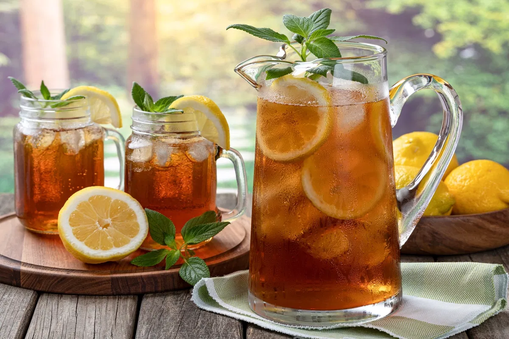

Receitas de Cafeteria
Chá Gelado Refrescante

Criado por: Barista Ana
Atualizada em: 10/10/2025
Uma bebida leve e refrescante, perfeita para dias quentes. Feita com chá preto ou verde, limão e gelo.
Ingredientes
- 2 saquinhos de chá preto ou verde
- 500 ml de água quente
- Suco de 1 limão
- Açúcar ou mel a gosto
- Gelo
Modo de preparo
- Prepare o chá com a água quente e deixe em infusão por 5 minutos.
- Coe, adicione o açúcar ou mel e mexa bem.
- Deixe esfriar, acrescente o suco de limão e bastante gelo.
- Sirva gelado, decorando com rodelas de limão.